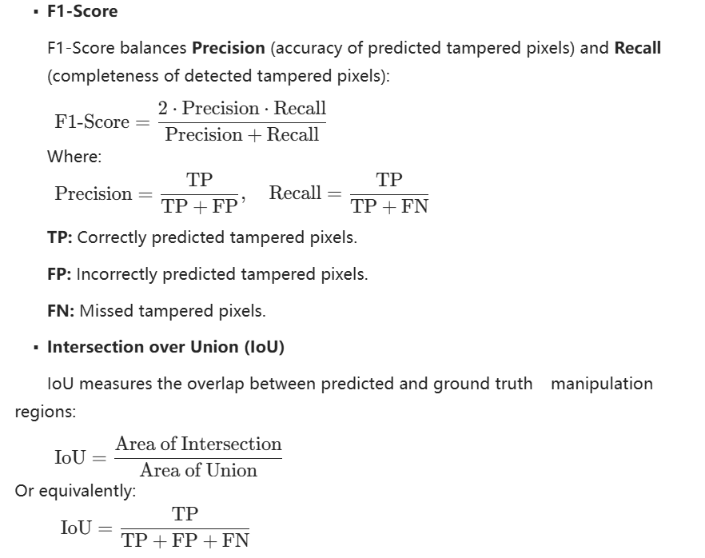
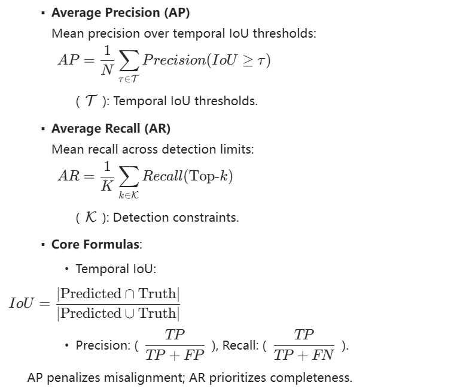

Challenge Significance
With the rapid advancement of AI-Generated Content (AIGC) technologies, their powerful generative capabilities across text, image, audio, and video modalities have driven widespread adoption in content creation and information dissemination.
However, malicious content such as deepfakes, misinformation, and voice impersonation are increasingly prevalent, posing serious threats to social trust and public safety. Current research on AIGC safety predominantly centers on single modalities or specific tasks, and the lack of coordination between model-level attack-defense and content-level detection hampers the construction of a systematic security framework that spans the entire life cycle.
Therefore, we propose the workshop on "DDL 2.0: AIGC Safety from Dual Perspectives of Model and Content". This workshop is a continuation and expansion of our successfully held IJCAI 2025 workshop, "DDL1.0: Deepfake Detection, Localization, and Interpretability". Aligned with IJCAI-ECAI's mission of "AI for Good", this workshop is carefully designed to advance the AI safety community, with particular emphasis on building a comprehensive, collaborative, and sustainable governance framework for AIGC safety.
Competition Rules and Incentives
1. Participation Guidelines
a) Model Submission Requirements
- Each track permits only one model submission that must simultaneously address both classification and localization tasks.
- All models must utilize open-source pre-trained architectures. Teams developing proprietary models during the competition are required to publicly release their model specifications and training protocols under open-source licenses (e.g., MIT, Apache 2.0) during the competition period.
- Winning solutions must open-source their full implementation, including:
- Training pipelines and hyperparameter configurations
- Evaluation code with reproducibility documentation
- Final model weights in standard formats
- Violations of these rules will result in disqualification. The organizing committee reserves final authority over all competition-related matters.
- Extended samples generated by data augmentation/deepfake tools based on the released training set can be used for training, but these tools need to be submitted for reproduction.
2. Awards and Recognition
- Monetary prizes: Substantial monetary awards will be granted to top-performing teams across both tracks.
- Academic recognition: Exceptional solutions will be invited for presentation at the IJCAI.
Challenge Content
We plan to host three competition tracks spanning AI-generated content and model-related tasks to attract broader research attention to AIGC safety challenges. These competitions will run concurrently with the workshop.
Track 1: Deepfake Detection, Localization, and Explainability
Deepfake realism has spurred numerous detection competitions, but most emphasize image-level classification, overlooking spatial localization and interpretable trace analysis. The localization of manipulated regions improves the explainability of decisions, and the increasing number of multimodal forgeries increases the risk. We introduce the Deepfake Detection, Localization, and Explainability Challenge, supported by a large-scale multimodal deepfake description dataset (200K+ fake samples) that leverages Qwen3-VL to enrich the DDL-I corpus and advances spatial localization and explainability. More details about the competition can be found in our Submission ID 9 to the Competitions Track of IJCAI-ECAI 2026, where we present a comprehensive proposal.

Track 2: General AIGC Audio-Video Detection
As audio-video generation becomes increasingly realistic, mitigating malicious misuse has become a key research priority. To raise awareness and accelerate defenses, we present a General AIGC Audio-Vision Detection Challenge, supported by a large-scale, high-quality multimodal dataset covering 25 generation techniques and three forgery modes to advance robust audio-visual detection. More details about the competition can be found in our Submission ID 10 to the Competitions Track of IJCAI-ECAI 2026, where we present a comprehensive proposal.

Track 3: Security Attacks and Defenses in Generative Foundation Models
Large Generative Models (LGMs) deliver strong performance in perception and generation, but pose nontrivial security risks. With language prompts, LLMs and T2I models can yield harmful or policy-violating outputs; in MLLMs, vision-language interactions amplify threats, and evolving attacks continue to bypass defenses. Therefore, we present the Safety Attack-and-defense for Generative Large Models Challenge that aims to systematically reveal and evaluate safety vulnerabilities of LGMs across diverse attack scenarios. More details about the competition can be found in our Submission ID 11 to the Competitions Track of IJCAI-ECAI 2026, where we present a comprehensive proposal.